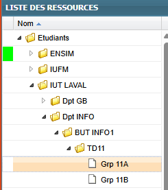
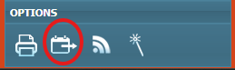
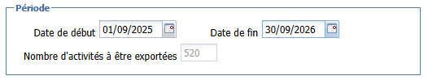
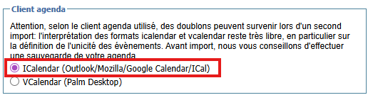
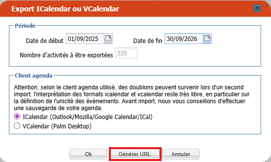
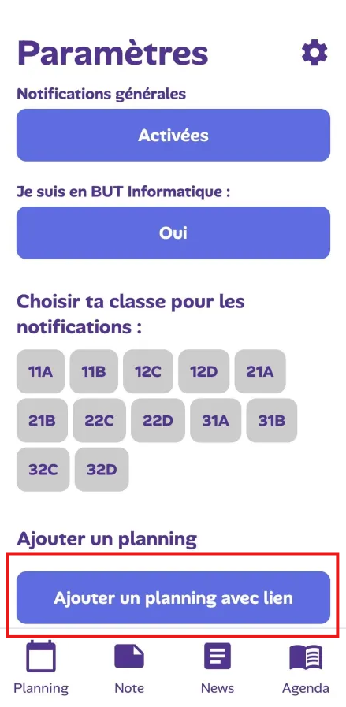

Comment ajouter ton planning ?
Suis ces étapes simples pour synchroniser ton emploi du temps ENT avec Studiz.
Accéder à l'ENT
Connecte-toi à ton environnement numérique de travail (ENT) habituel et rends-toi dans la section "Emploi du temps".
Choisir le planning
Affiche l'emploi du temps spécifique que tu souhaites ajouter à l'application Studiz.

Exporter le calendrier
Cherche et clique sur le bouton "Exporter".

Définir les dates
Pour tout englober, mets la date de début au 1er septembre de l'année actuelle et la date de fin au 30 septembre de l'année suivante.

Format iCalendar
Vérifie que le format iCalendar est bien sélectionné.

Générer l'URL
Clique sur le bouton "Exporter URL".

Copier le lien
Copie l'adresse (le lien) qui vient de s'afficher à l'écran.
Ouvrir Studiz
Dans Studiz, va dans les Paramètres et clique sur "Ajouter planning avec lien".

Configuration
Donne un nom à ton planning (ex: "Cours L1") et colle le lien que tu as copié précédemment.
C'est terminé !
Clique sur "Ajouter" et voilà ! Ton planning apparaîtra automatiquement dans l'app. 🐭